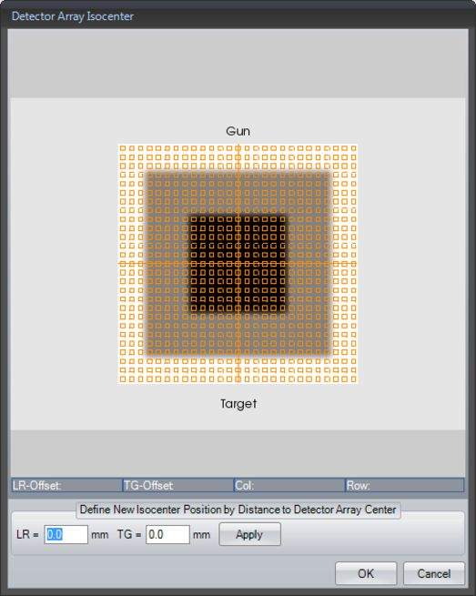

This function is not available for OCTAVIUS 4D measurements.
In the Measurement Parameters dialog, define the isocenter position by entering the distances in LR and TG direction between isocenter and detector array center.
or
Click the Define button.
The Detector Array Isocenter dialog will be displayed:

Detector Array Isocenter dialog
In order to define the isocenter, click the image or enter the isocenter distance to the detector array center in LR and TG direction and verify the position by clicking the Apply button.